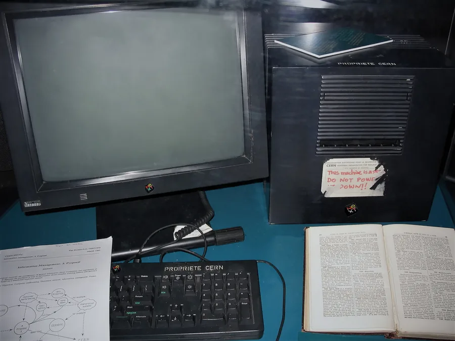

World Wide Web e popularização da internet
Anos 1990 · do CERN à bolha pontocom
Conexão discada de 14,4k a 56k, cobrança por pulso e navegação concentrada à noite e no fim de semana. A tela demorava a montar a imagem linha por linha, e o ruído do modem virou parte da memória coletiva da década.

HTML, HTTP e URL, com a tecnologia liberada gratuitamente pelo CERN em 1993. Depois vêm os navegadores gráficos e a guerra entre Netscape e Internet Explorer, os provedores de acesso, os portais e mensageiros como ICQ e mIRC, e o comércio eletrônico da Amazon e do eBay — até a bolha pontocom.
Qualquer pessoa passou a poder publicar para o mundo. A web transformou a internet de infraestrutura acadêmica em meio de massa, e a especulação em torno das startups de tecnologia deixou a primeira lição pública sobre expectativa e modelo de negócio.
Página de 1996
Arraste as tags da esquerda até a tela (ou apenas clique nelas). Depois compare como a página aparecia no Netscape de 1996 e como um navegador de hoje a exibiria.
Arraste uma tag da esquerda até aqui,
ou apenas clique
nela.
- CERN — documento oficial de 30 de abril de 1993 que liberou a World Wide Web em domínio público, sem royalties.
- Histórico do Netscape Navigator (lançado em dezembro de 1994) e do Internet Explorer 1.0 (lançado em agosto de 1995), início da guerra dos navegadores.
- Histórico do mIRC (lançado por Khaled Mardam-Bey em fevereiro de 1995) e do ICQ (lançado pela Mirabilis em novembro de 1996).
- Histórico da Amazon (fundada por Jeff Bezos em julho de 1994) e do eBay, lançado como AuctionWeb por Pierre Omidyar em setembro de 1995.
- Britannica — verbete sobre a bolha pontocom, com o pico do Nasdaq em março de 2000 e a queda que se seguiu até 2002.
- Anatel — histórico da internet comercial no Brasil e da cobrança por pulso telefônico na conexão discada.
- Evolução das velocidades de modem discado: 14,4k (padrão de 1993) até o padrão V.90 de 56k, ratificado pela ITU em 1998.
- A velocidade real de um modem 56k varia com a linha telefônica; o valor usado no cálculo de carregamento (4,2 KB/s) é uma aproximação didática de uma conexão típica da época, não uma medição.
- Datas de vida conferidas no Wikidata; crédito das fotos na página de créditos.